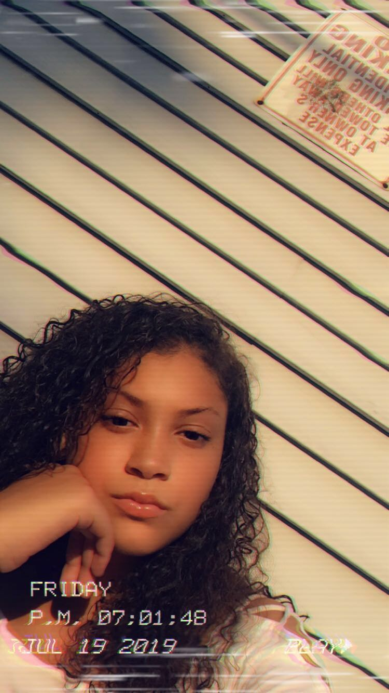
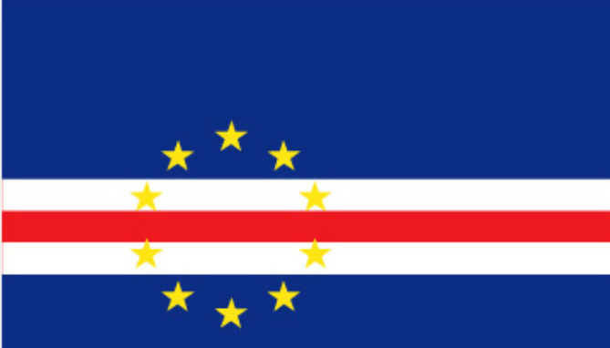
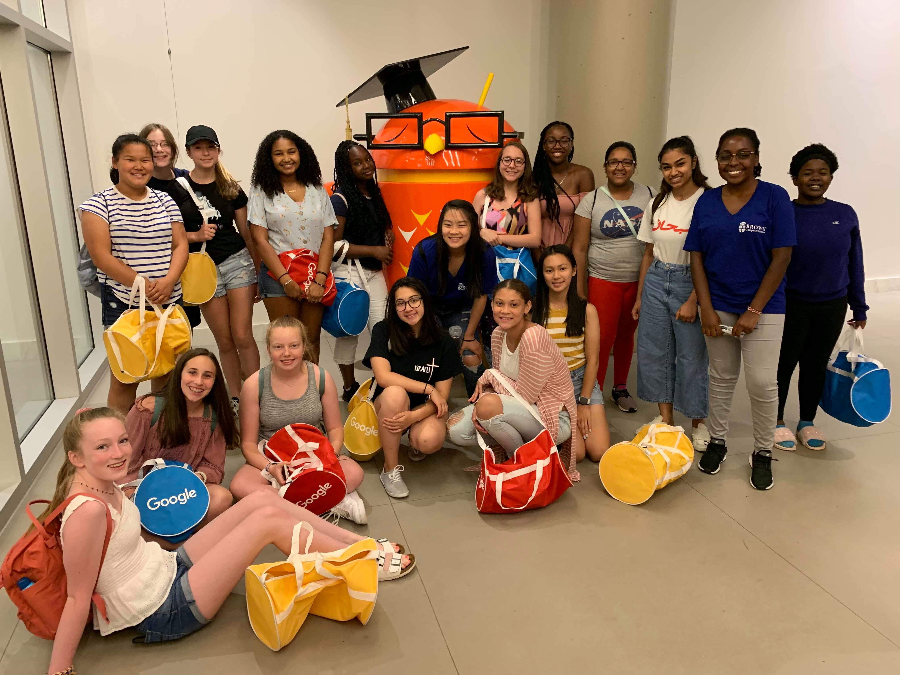
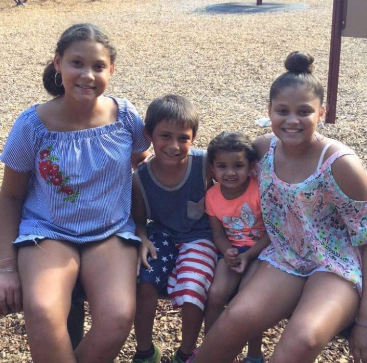
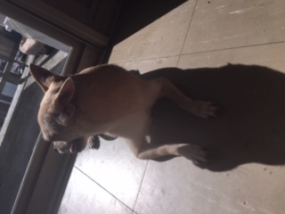
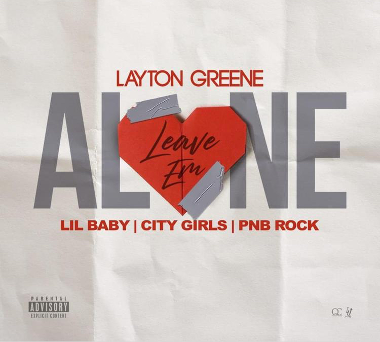
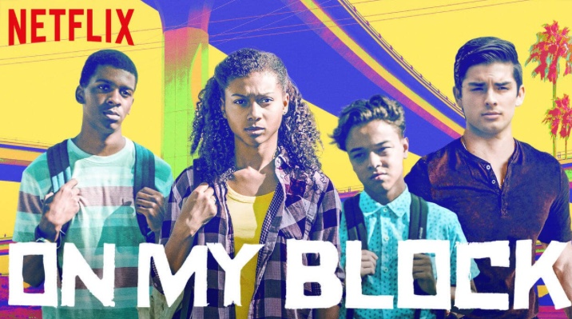
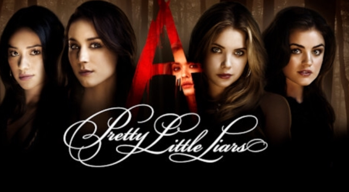
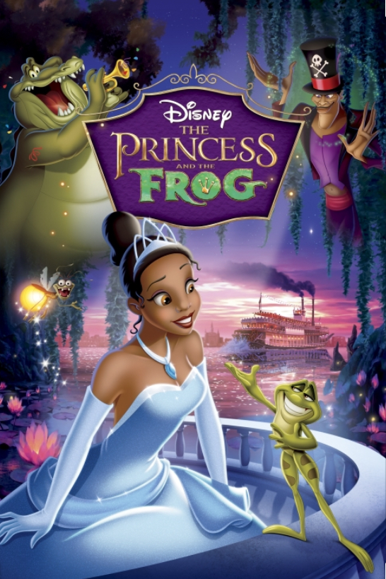

- This is Me
Im Cape Verdian
At first i thought i wasnt gonna like this program, but turns out i actually
really liked it. Thanks
to, Mia, Christine, Connie & Shenandoah. Thanks to them and a few other campers
ive learned things ive never wouldve thought of studying.
.



- I Have 3 VERY Annoying Siblings, All Younger Than Me.

- I have a Dog Named Lola, she is a Chihuahua and Pomeranian Mixed ❤.

- My 2 Favorite Songs are "No Guidance" by Chris Brown & Drake. &
"Leave em Alone" by Layton Green, Lil Baby, & City Girls.


- My Favorite TV Shows Are: "On My Block" & "All American"


- My Favorite Movie is "Princess & The Frog"
